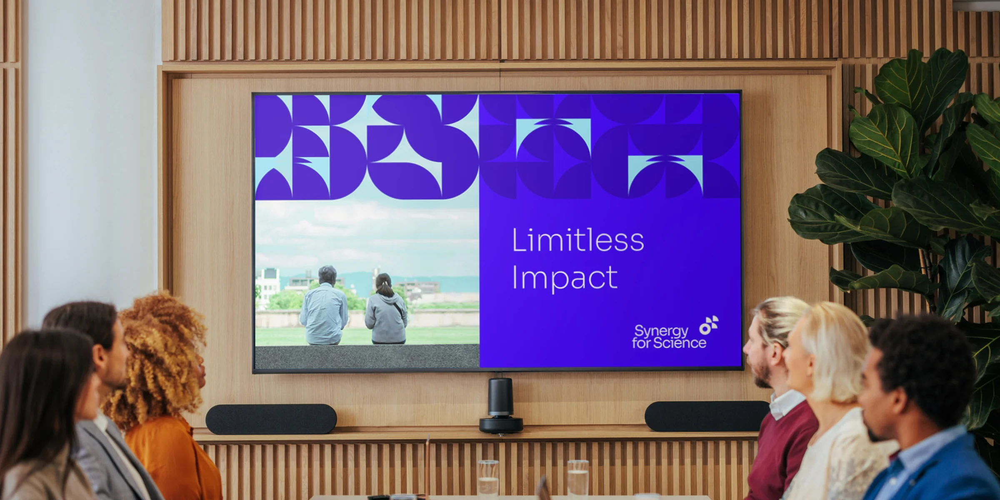
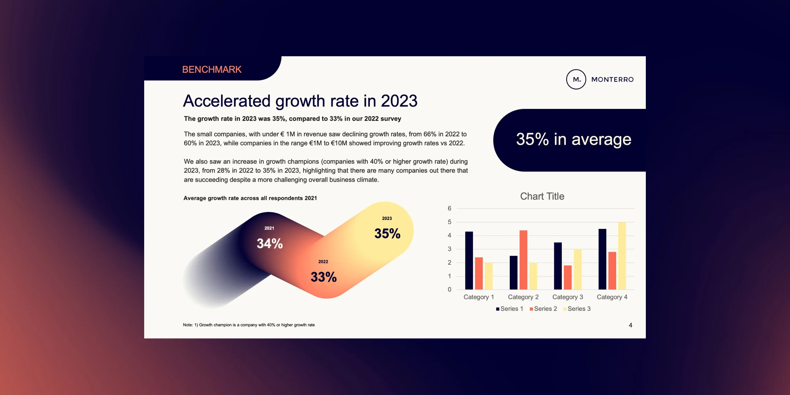
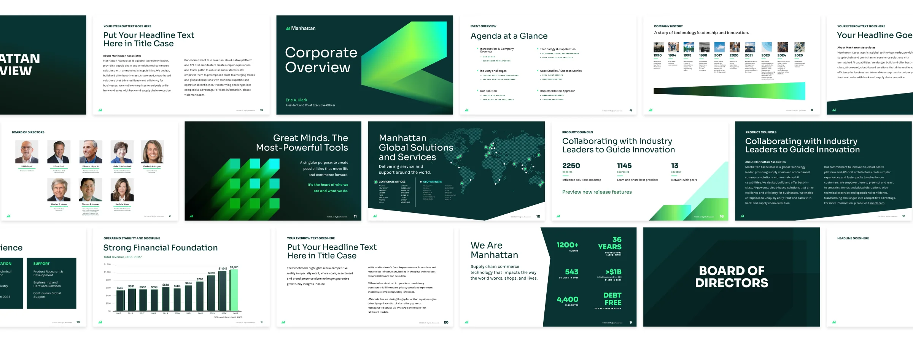
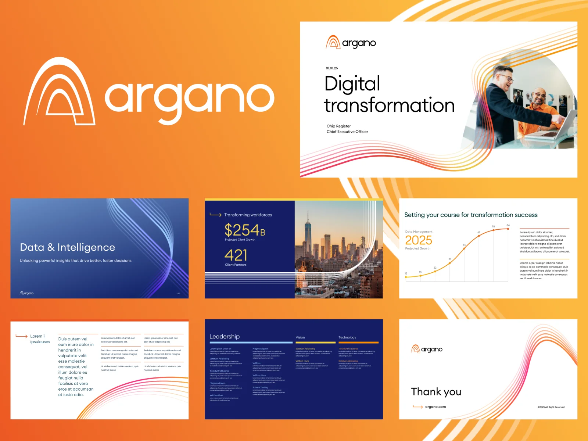
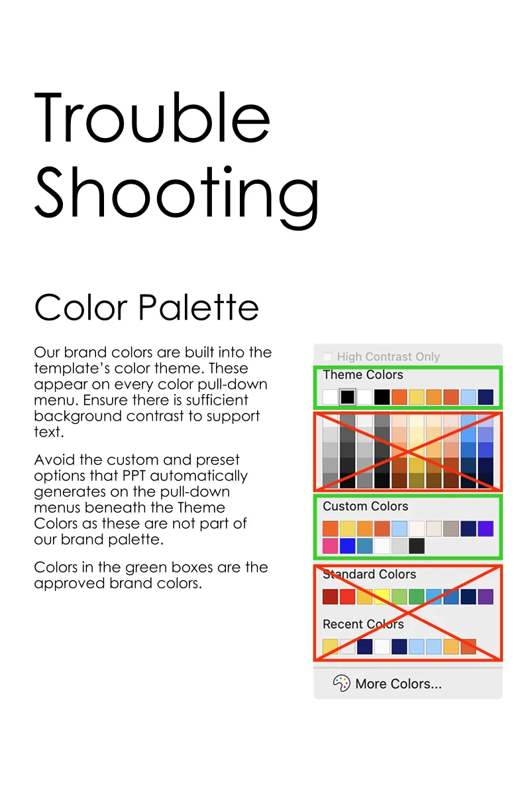
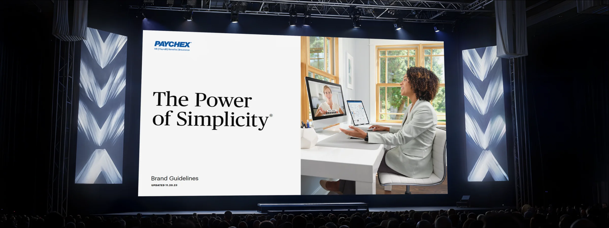

Sköna
Presentation template systems that a B2B agency's clients can actually use.
- Client
- Sköna, a B2B creative agency for technology companies
- Role
- Brand Designer
- Years
- 2021 to now
- Scope
- Master presentation templates, PowerPoint and Google Slides systems, brand guidelines integration, user documentation

The problem
Part of Sköna's process for every client is building a custom presentation template that has to do two things at once: tell a brand's story with enough sophistication to earn attention, and be simple enough for anyone in the company to actually use.
The design needs to be unique and intricate enough to engage whoever's on the other side of the screen and tell the specific story of that business. But the template also has to be foolproof enough for someone who didn't design it, and never will, to pick it up, fill it in, and send it out without breaking anything.
That's a harder problem than it sounds. The more visually considered a template is, the more ways there are for someone to deviate from it. A wrong font, an off-brand color, a misaligned layout, and suddenly the presentation that was supposed to build credibility is quietly undermining it instead. The brief is always the same: make it impressive, make it intuitive, and make sure those two things don't fight each other.

The thinking
The goal is a template that does the thinking so the user doesn't have to.
Every template I build is a master file, custom formatted with branded color palettes, fonts, layouts, and graphic elements baked directly into the document. When someone opens it to start a new presentation, they shouldn't have to make a single design decision. The right font is already there. The spacing is already correct. The color is already on brand. It should be 100% foolproof, so the only thing the user has to focus on is what they're actually trying to say.

The system
Locked masters, a guide for when things go wrong, and constraints the user never sees.
But a good template also accounts for the moments when things don't go as planned. I always include a guide alongside the file: best practices for working in PowerPoint or Slides, and troubleshooting information for the issues that inevitably come up. Not because I expect the work to fail, but because a template that comes with context is one that actually gets used correctly.
The most important design decisions in a presentation template aren't always the ones that are visible. They're the constraints. Locked master slides, protected style guides, designated placeholder areas. The structure the user never sees is what makes the design they do see stay consistent.


In the world
A custom branded presentation is doing work for a business every time someone opens it.
What Sköna's clients end up with is a template that makes every presentation feel considered, even the ones that weren't. Whether it's an annual report going to investors, an onboarding deck for a new client, or an internal all-hands that someone put together the night before, the brand shows up the same way every time. That consistency builds trust. It signals to whoever's on the receiving end that this is a company that has its act together, before a single word gets read.

Results
- Years as Sköna's presentation specialist
- 5+
- Presentations delivered across Sköna's client portfolio
- 25+
- Increase in conversion rate for customers with branded presentations
- 55%
For Sköna, this is the last mile of their branding work: the point where a visual identity stops being a document and starts being something people actually use every day. A logo and a color palette only go as far as the things built from them.